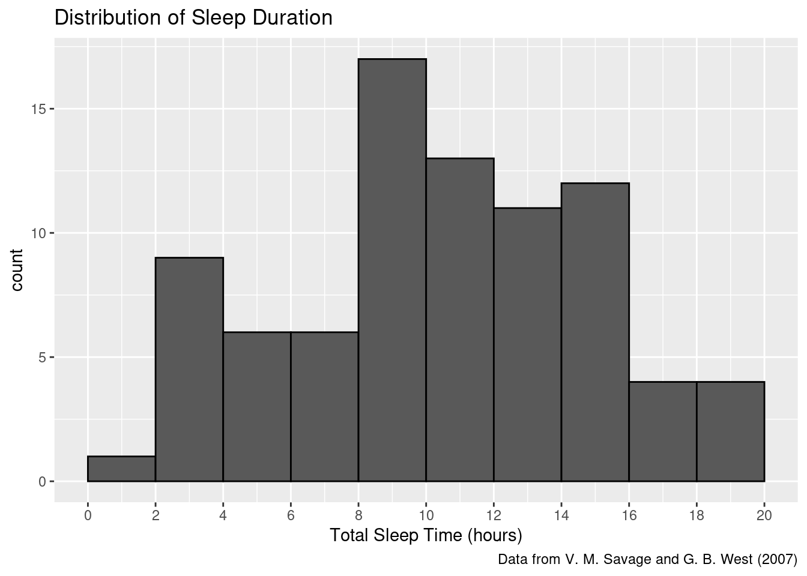
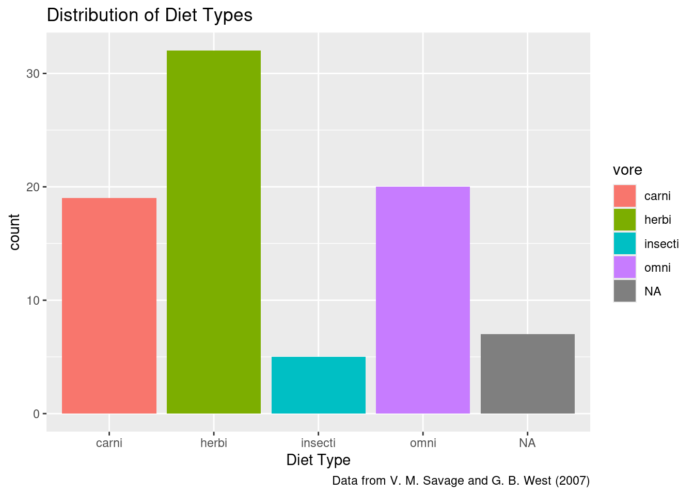
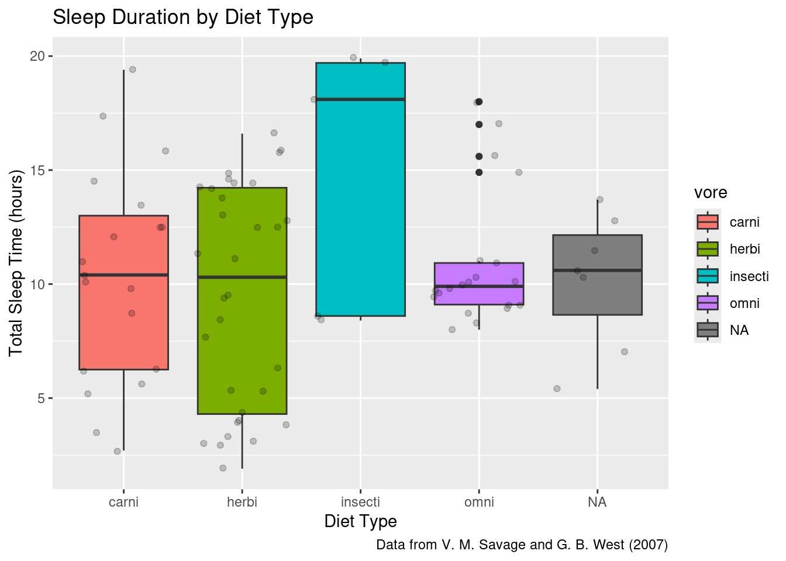
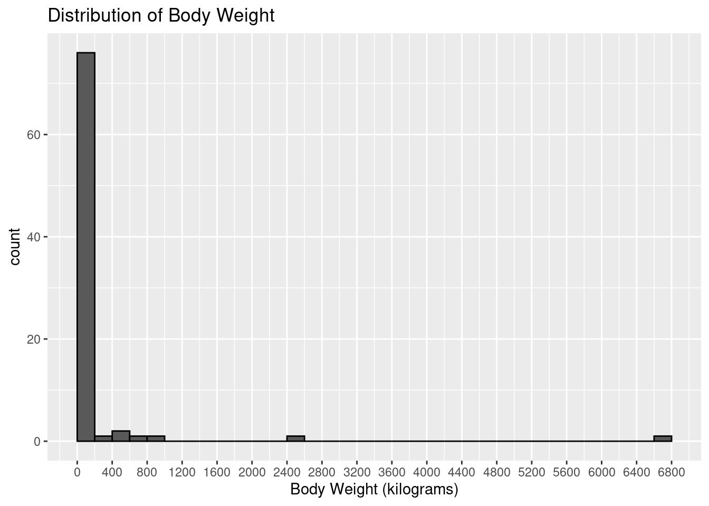
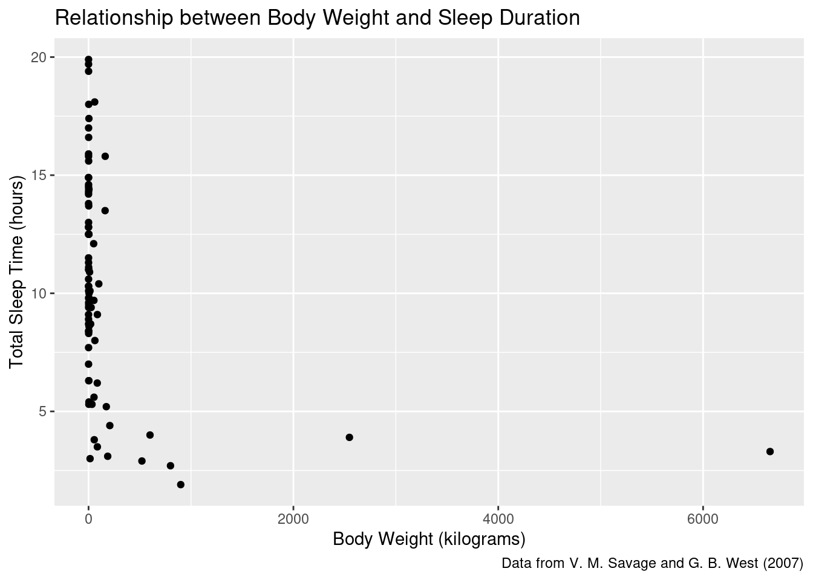
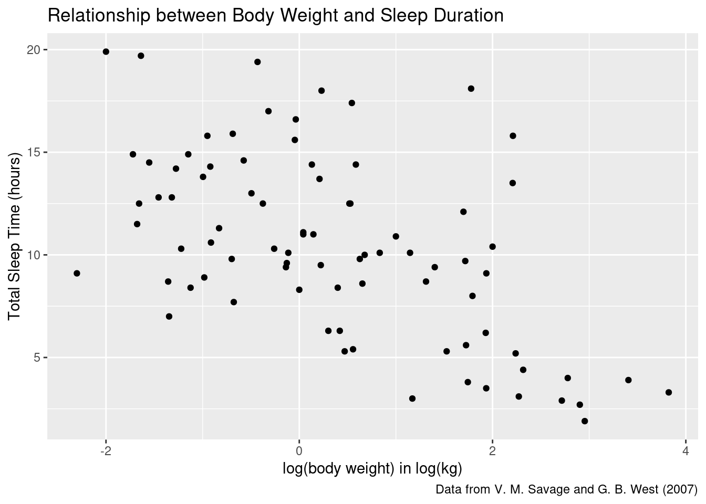
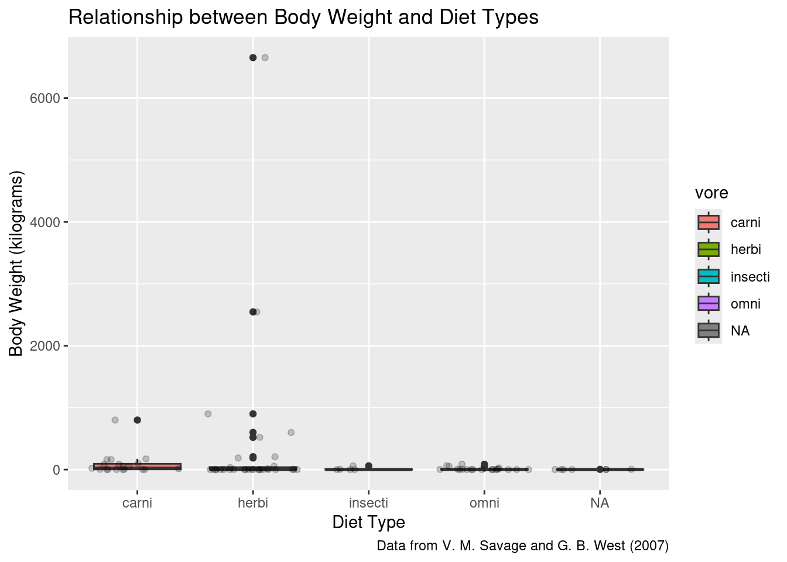
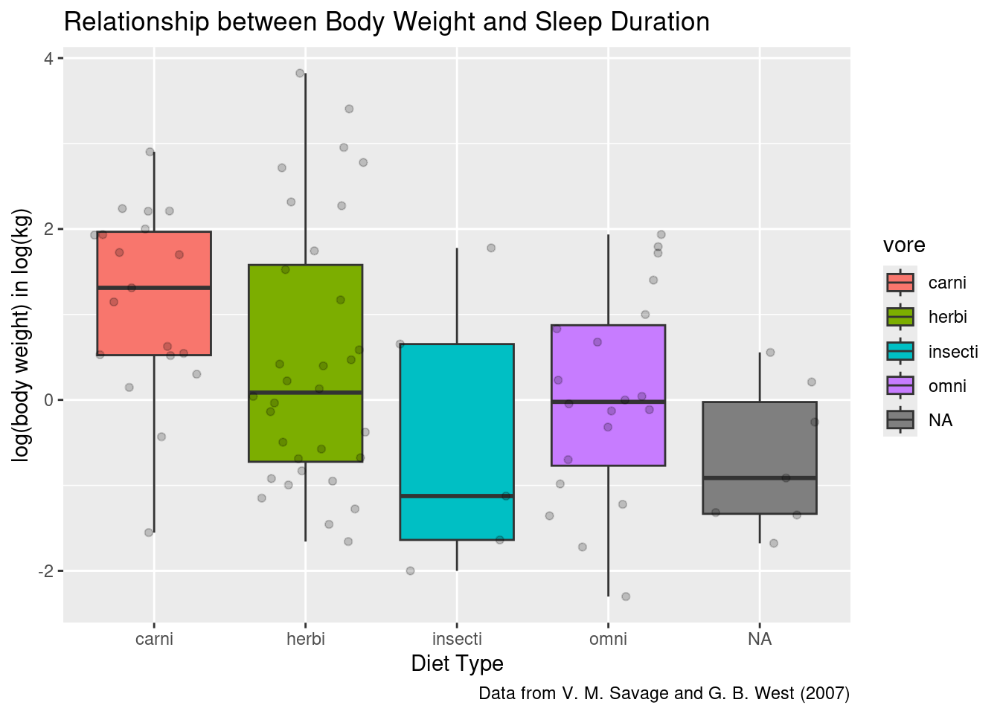

Exploratory Data Analysis
Learning objectives
- Understand the context and structure of a dataset.
- Formulate research questions related to the dataset.
- Perform exploratory data analysis (EDA) by summarizing and visualizing key variables.
- Interpret findings and consider biological and ecological implications.
Start your workflow by uploading the tidyverse package which contains the ggplot functions:
We will consider the built-in dataset called msleep which contains information about mammals, their sleeping habits, and some other characteristics.

1. Gather some background information
a. Context
You can get more information about the variables in this dataset by running ?msleep in the console.
What was the source for this dataset? Provide a citation for the dataset that you could include in a caption.
The dataset was gathered from a study: V. M. Savage and G. B. West. A quantitative, theoretical framework for understanding mammalian sleep. Proceedings of the National Academy of Sciences, 104 (3):1051-1056, 2007.
b. Structure
How many rows and columns? What does one row in this dataset represent?
## [1] 83 11The dataset contains 83 rows and 11 columns. One row represents one mammal.
What types of variables are available? Add the units to the numeric variables listed in the table below:
| Variable | Description |
|---|---|
| name | Common name |
| genus | Taxonomic rank |
| vore | Diet: carni-, herbi-, insecti-, omni-vore |
| order | Another taxonomic rank |
| conservation | Conservation status of the mammal |
| sleep_total | Total amount of daily sleep in hours |
| sleep_rem | Amount of REM sleep in hours |
| sleep_cycle | Length of sleep cycle in hours |
| awake | Amount of time spent awake in hours |
| brainwt | Brain weight in kilograms |
| bodywt | Body weight in kilograms |
It is always a good idea to quickly check the summary statistics for the numeric variables:
## name genus vore
## Length:83 Length:83 Length:83
## Class :character Class :character Class :character
## Mode :character Mode :character Mode :character
##
## order conservation sleep_total
## Length:83 Length:83 Min. : 1.90
## Class :character Class :character 1st Qu.: 7.85
## Mode :character Mode :character Median :10.10
## Mean :10.43
## sleep_rem sleep_cycle awake
## Min. :0.100 Min. :0.1167 Min. : 4.10
## 1st Qu.:0.900 1st Qu.:0.1833 1st Qu.:10.25
## Median :1.500 Median :0.3333 Median :13.90
## Mean :1.875 Mean :0.4396 Mean :13.57
## brainwt bodywt
## Min. :0.00014 Min. : 0.005
## 1st Qu.:0.00290 1st Qu.: 0.174
## Median :0.01240 Median : 1.670
## Mean :0.28158 Mean : 166.136
## [ reached getOption("max.print") -- omitted 3 rows ]Anything you notice or wonder about?
There are some missing values for some of the variables (for example, sleep_rem). Some variables have large values for max compared to the rest of the values (for example, brainwt or bodywt).
2. Formulate some research questions
We formulate research questions to guide the analysis. For example, we may wonder: how does the amount of total sleep compare across the diet for these mammals?
Write another research question:
Another example could be: How does the body weight of a mammal affect their total amount of sleep?
3. Investigate trends and relationships
After we formulate a research question, we investigate!
a. First look at univariate distributions
Always a good idea to understand each variable separately.
Make an appropriate graph to investigate each variable involved in this research question: how does the amount of total sleep compare across the diet for these mammals?
# Create a visualization for a numeric variable
ggplot(msleep) +
geom_histogram(aes(x = sleep_total), binwidth = 2, center = 1, color = "black") +
scale_x_continuous(breaks = seq(0,24,2)) +
labs(title = "Distribution of Sleep Duration",
x = "Total Sleep Time (hours)",
caption = "Data from V. M. Savage and G. B. West (2007)")
# Provide summary statistics
msleep |>
# Summarize with different measures
summarize(
mean_sleep_total = mean(sleep_total),
sd_sleep_total = sd(sleep_total))These mammals sleep an average of 10.4 hours and typically differ by 4.5 hours from the mean. Some mammals sleep less than 2 hours and some sleep up to 20 hours.
# Create a visualization for a categorical variable
ggplot(msleep) +
geom_bar(aes(x = vore, fill =vore)) +
labs(title = "Distribution of Diet Types",
x = "Diet Type",
caption = "Data from V. M. Savage and G. B. West (2007)")
# Provide summary statistics
msleep |>
# Summarize with different measures
group_by(vore) |>
# Summarize per group
summarize(count = n(),
proportion = n() / nrow(msleep))Most mammals are herbivore (38.6%) and a few are insectivore (6%). The type of diet was missing for 7 mammals.
b. Then look at relationships
Once we learned about each variable, we can investigate the potential relationships between the variables:
# Create a visualization for the relationship between a numeric and a categorical variable
ggplot(msleep) +
geom_boxplot(aes(x = vore, y = sleep_total, fill = vore)) +
geom_jitter(aes(x = vore, y = sleep_total), alpha = 0.2) +
labs(title = "Sleep Duration by Diet Type",
x = "Diet Type",
y = "Total Sleep Time (hours)",
caption = "Data from V. M. Savage and G. B. West (2007)")
# Provide summary statistics
msleep |>
# Summarize with different measures
group_by(vore) |>
# Summarize per group
summarize(
mean_sleep_total = mean(sleep_total),
sd_sleep_total = sd(sleep_total))Insectivore mammals tend to sleep more (almost 15 hours on average). Omnivore mammals are the most consistent in their total amount of sleep (with the smallest standard deviation).
4. Answer the questions and be critical
Discuss any findings from your exploratory data analysis, mention anything either surprising or aligning with your expectations.
While it is interesting to note that insectivore mammals tend to sleep more, it is also important to mention that there were not many mammals to learn from in this category and there is a lot of overlap between the different types of diet.
What would you be curious about next?
What else influence hours of sleep?
Your turn!
In a group of 2, conduct a quick EDA to answer one of the following questions with data from msleep. When done, copy/paste any graphs, statistics, and conclusion in this slideshow.
How does the body weight of a mammal affect their total amount of sleep?
# Already looked at the distribution of sleep_total
# Look at the distribution of bodywt
ggplot(msleep) +
geom_histogram(aes(x = bodywt), binwidth = 200, center = 100, color = "black") +
scale_x_continuous(breaks = seq(0,7000,400)) +
labs(title = "Distribution of Body Weight",
x = "Body Weight (kilograms)")
# Represent 2 numeric variables
ggplot(data = msleep) +
geom_point(aes(x = bodywt, y = sleep_total)) +
labs(title = "Relationship between Body Weight and Sleep Duration",
x = "Body Weight (kilograms)",
y = "Total Sleep Time (hours)",
caption = "Data from V. M. Savage and G. B. West (2007)") 
# Better version of the visualization
ggplot(data = msleep) +
# Tip: use log10 for data that is highly right-skewed
geom_point(aes(x = log10(bodywt), y = sleep_total)) +
labs(title = "Relationship between Body Weight and Sleep Duration",
x = "log(body weight) in log(kg)",
y = "Total Sleep Time (hours)",
caption = "Data from V. M. Savage and G. B. West (2007)")
## [1] -0.5686377There is a general trend where larger mammals tend to sleep less, but the relationship is not so strong. Some very small mammals sleep much longer than larger ones. The log transformation helps to show the pattern more clearly since body weight varies drastically.
How does the body weight of a mammal differ based on their diet?
# Already looked at the distribution of each variable (bodywt and vore)
# Represent 1 numeric variable vs 1 categorical variable
ggplot(data = msleep) +
geom_boxplot(aes(x = vore, y = bodywt, fill = vore)) +
geom_jitter(aes(x = vore, y = bodywt), alpha = 0.2) +
labs(title = "Relationship between Body Weight and Diet Types",
x = "Diet Type",
y = "Body Weight (kilograms)",
caption = "Data from V. M. Savage and G. B. West (2007)")
# Better version of the visualization
ggplot(data = msleep) +
geom_boxplot(aes(x = vore, y = log10(bodywt), fill = vore)) +
geom_jitter(aes(x = vore, y = log10(bodywt)), alpha = 0.2) +
labs(title = "Relationship between Body Weight and Sleep Duration",
x = "Diet Type",
y = "log(body weight) in log(kg)",
caption = "Data from V. M. Savage and G. B. West (2007)")
# Provide summary statistics
msleep |>
# Summarize with different measures
group_by(vore) |>
# Summarize per group
summarize(
median_bodywt = median(bodywt),
IQR_bodywt = IQR(bodywt))Carnivore mammals tend to have larger body weights on average compared to other diets. However, the largest mammals were herbivore. Indeed, herbivores have the widest range of body sizes. The log transformation helps to show the pattern more clearly since body weight varies drastically.
Recommended Resources
- Worksheet keys are posted at the end of the week on Canvas under Programming Tools.
- Recommended readings: Exploratory Data Analysis
- Data to Viz leads you to the most appropriate graph for your data.